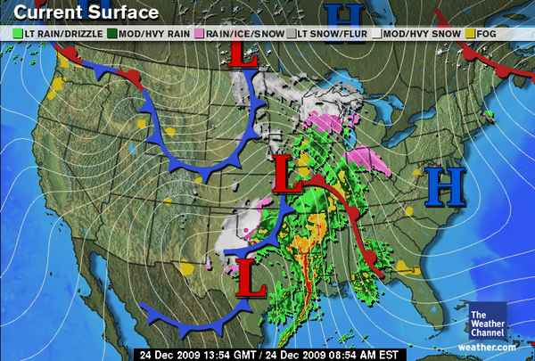

The Great Wall Of Weather

Check out this weather map. There is no way you’re getting through that if you need to head west. Good luck with your travels on Christmas Eve.

Check out this weather map. There is no way you’re getting through that if you need to head west. Good luck with your travels on Christmas Eve.


I-81 North in Virginia is at a dead standstill. There is atleast a 20 mile backup. We’re at mile marker 166 and just a few minutes ago we saw an emergency vehicle drive past us on the shoulder. Hooray for Internet connected devices.

It’s 5:20 am. We’ve been in standstill traffic for the past 15 minutes or so. So much for getting a headstart on our trip to deep south Virginia. No worries as there is an in-van DVD player, an inverter to power my laptop, and I have my Zune. Don’t worry I’m not driving. Kristina’s parents sure know how to travel, they rock!


After work Kristina and I went to Brookside Garden of Lights with our friends Kathy and Alex. They had lots of displays including a thunderstorm with a rainbow, lions, turtles, pigs, a wolf howling at the moon, and lots of flowers. Pictured here is a giraffe and a sea dragon. They were easily my two favorite light sculptures.

After my company party, Kristina and I took a stroll down to the White House to see the National Christmas Tree. It was bitterly cold but the warming hut felt nice. We even got a picture with Santa! Kristina will post an album on Facebook later.

My new Rav 4 is covered in snow for the first time. I heard we were supposed to get some snow today but this is more than I expected. It is really coming down in big, flakey chunks.
Good thing I got the 4×4 model Rav 4 as I am supposed to drive up to my parents house later to help out with a kayaker holiday party.


After days of clouds, drizzle, and mist, the sky finally opens up and sunshine reappears. Just in time for the long Thanksgiving weekend.

Kristina was in Virginia with her parents all day and brought home a box of fudge covered Ritz crackers. They are real thin and crispy with a taste like wafers. Interesting.

Made it through the first session with talks by Joel Salatin (holistic framer from Virginia), Scott Simon (NPR Correspondent), Marcus Ranum (Computer Security Researcher), Naomi Natale (Installation Artist / social activist, check out thecradleproject.org and onemillionbones.org), and Aneesh Chopra (Nation’s Chief Technology Officer). The talks have been outstanding so far.

In my seat waiting for TEDxMidAtlantic start. Should be a long day of inspiring talks. To quote the last sentence of the first page of the program, “Prepare to have your world expanded and mind blown.” I can’t wait.